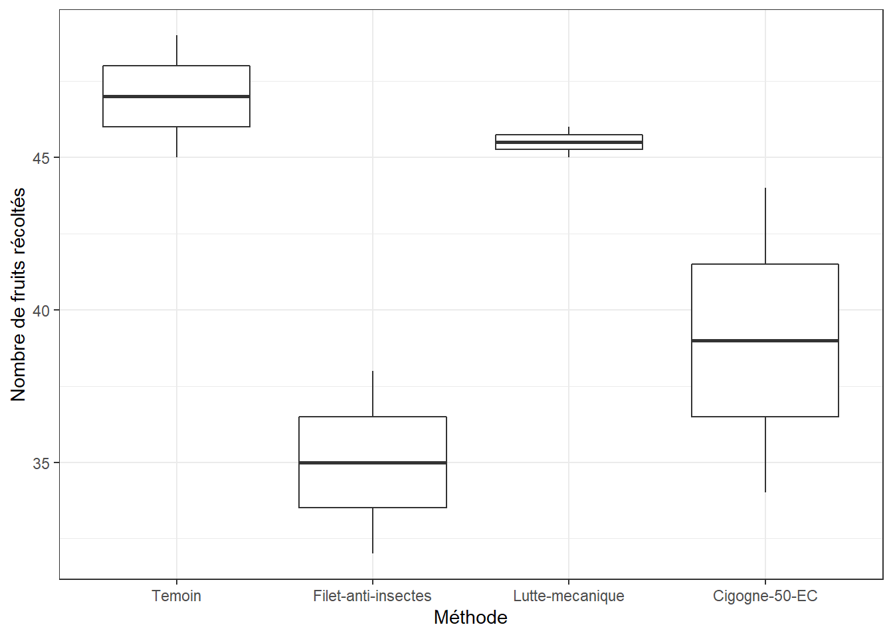
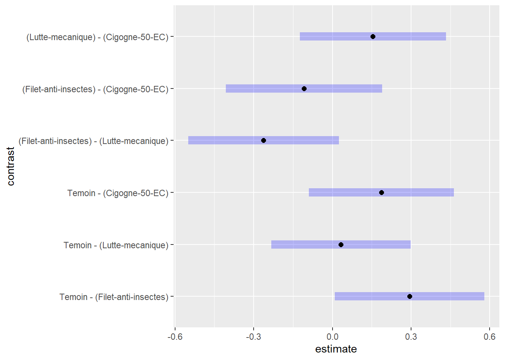
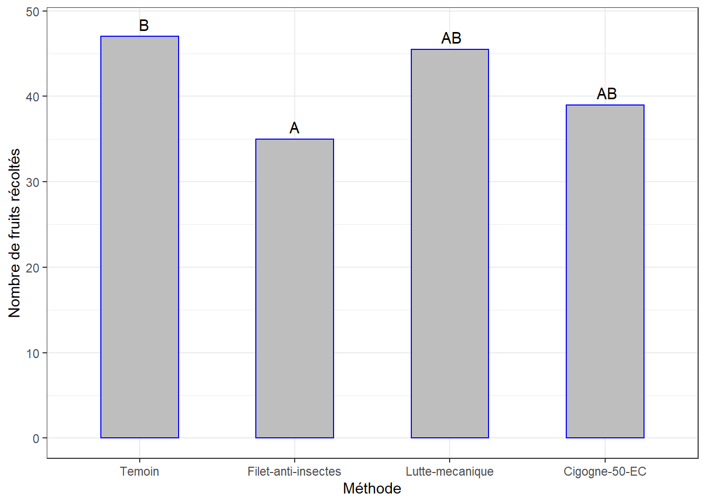

Chapitre 9 Nombre de fruits récoltés
Évaluer si le Nombre total de fruits récoltés nfruits diffère significativement selon la méthode de contrôle appliquée.
Jeu de données diam.csv.
9.1 Les données
9.2 Visualisation boxplots
bxp <- ggplot(df, aes(x = methode, y = nfruits)) +
geom_boxplot() +
ylab("Nombre de fruits récoltés") + xlab("Méthode") +
theme_bw()
bxp
Il y a des différences notables entre les méthodes.
9.3 Détection des observations aberrantes extrêmes
## [1] methode id bloc nfruits is.outlier is.extreme
## <0 rows> (or 0-length row.names)=> Pas d’observation aberrante extrême pour toutes les méthodes
9.4 L’ANOVA
9.4.1 Le modèle chi-2
## Analysis of Deviance Table (Type II tests)
##
## Response: nfruits
## LR Chisq Df Pr(>Chisq)
## methode 9.3063 3 0.02548 *
## ---
## Signif. codes: 0 '***' 0.001 '**' 0.01 '*' 0.05 '.' 0.1 ' ' 1La p-value < 0.05 => différence significative entre les effets de certaines méthodes de contrôle sur le Nombre total de fruits récoltés.
9.4.2 Comparaisons par paires
pwc_lm = emmeans(lm, ~ methode)
cm <- pairs(pwc_lm) %>% as_tibble() %>%
mutate(no_contrast = c("Contraste 1", "Contraste 2", "Contraste 3",
"Contraste 4", "Contraste 5", "Contraste 6"))
cm %>% select(no_contrast, contrast, p.value) ## # A tibble: 6 x 3
## no_contrast contrast p.value
## <chr> <chr> <dbl>
## 1 Contraste 1 Temoin - (Filet-anti-insectes) 0.0396
## 2 Contraste 2 Temoin - (Lutte-mecanique) 0.989
## 3 Contraste 3 Temoin - (Cigogne-50-EC) 0.307
## 4 Contraste 4 (Filet-anti-insectes) - (Lutte-mecanique) 0.0876
## 5 Contraste 5 (Filet-anti-insectes) - (Cigogne-50-EC) 0.786
## 6 Contraste 6 (Lutte-mecanique) - (Cigogne-50-EC) 0.486=> Différence significative pour le contrate 1.

(cm_moy <- summarySE(df, measurevar = "nfruits", groupvars = "methode") %>%
data.table::setorder(nfruits) %>%
mutate(groups = cld(pwc_lm, alpha = 0.05, Letters = LETTERS)$.group))## methode N nfruits sd se ci groups
## 2 Filet-anti-insectes 2 35.0 4.2426407 3.0 38.118614 A
## 4 Cigogne-50-EC 2 39.0 7.0710678 5.0 63.531024 AB
## 3 Lutte-mecanique 2 45.5 0.7071068 0.5 6.353102 AB
## 1 Temoin 2 47.0 2.8284271 2.0 25.412409 BSous forme graphique …
ggplot(data = cm_moy, mapping = aes(x = methode, y = nfruits)) +
geom_bar(stat = "identity", color = "blue", fill = "grey", width = 0.5) +
geom_text(aes(label = groups), vjust = -0.5, size = 4) +
ylim(0, 48) +
xlab("Méthode") + ylab("Nombre de fruits récoltés") +
theme_bw()